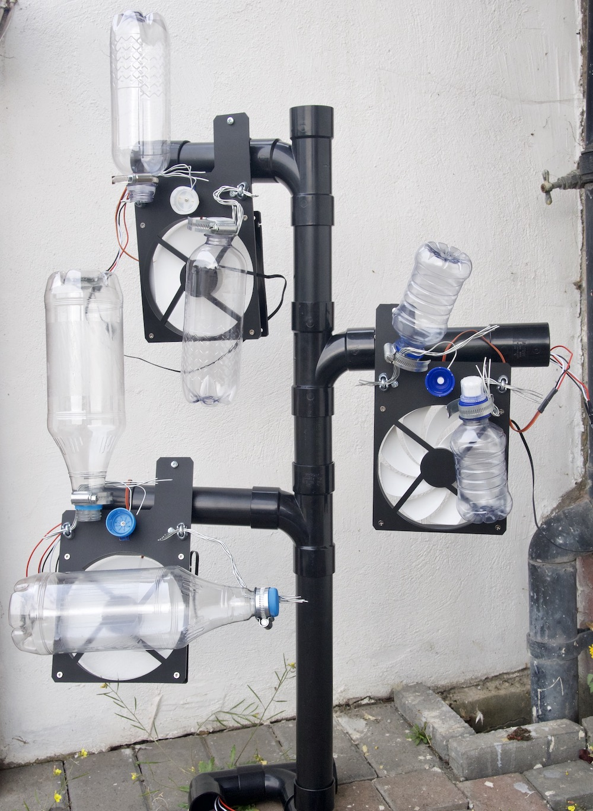
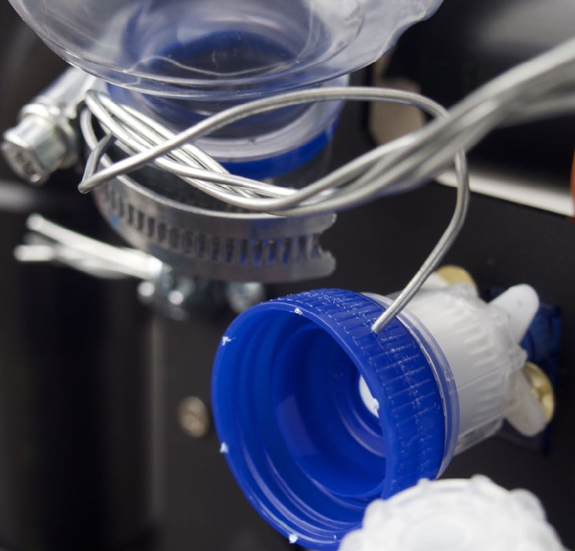
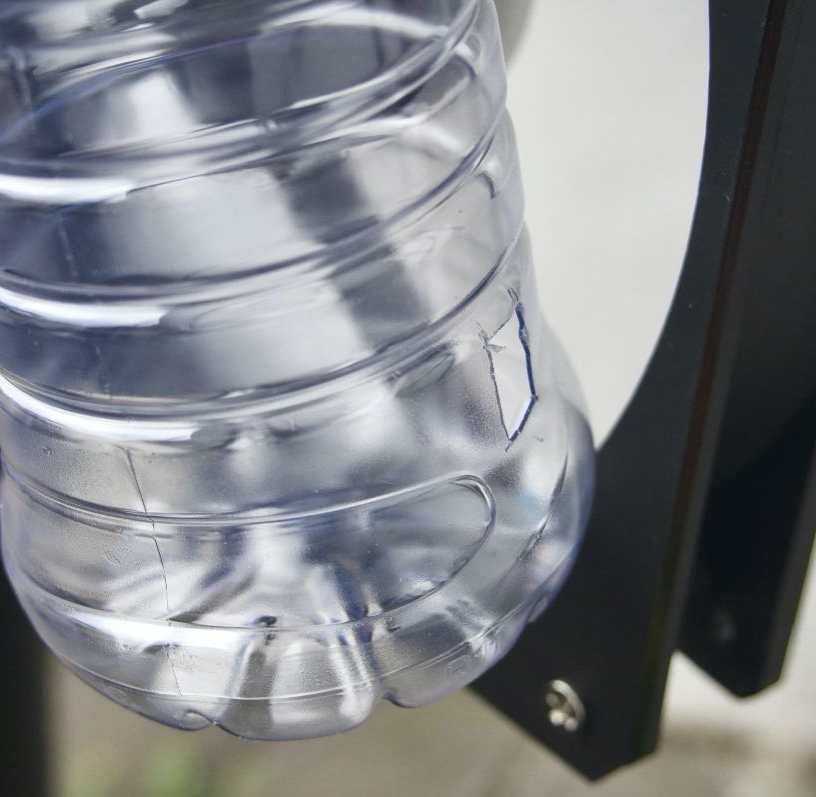

Fossil Forest
Single use plastic water bottles are the ghostly artefacts of vast supply chains constructed upon myths of purity. Despite their limited utility, they are grimly charismatic objects and can be found everywhere. There exists myriad designs and each bottle has playful sonic properties.
Inspired by various kinds of DIY robotics, I designed a tree-like structure that reacts to the environmental conditions where bottled water is sourced. Built from bottles, computer fans, servos and sewage piping, each branch represents a location where water is bottled and generates sound responding to rainfall conditions using the OpenWeatherMap API.

Dry conditions are sonified through the creaking of steel wire across the knurls of a bottle cap echoing through the chamber of an empty bottle. These servo driven noises are an attempt to mimic dry trees creaking. Rainy conditions are sonified through the dull moan of airflow over a slit cut into the side of an empty bottle. With enough time I would build an entire forest of these trees to orchestrate the sounds of bottles from locations around the world.

